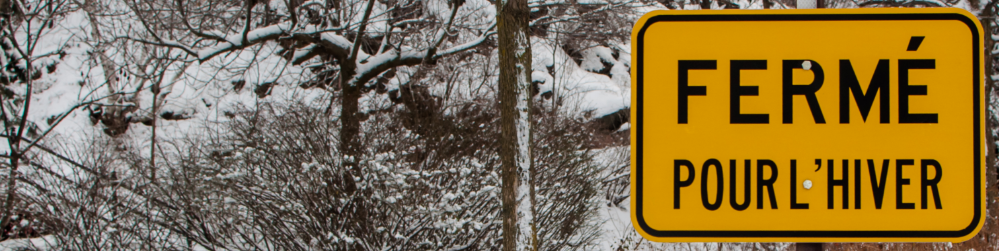

Première neige27 novembre 2016
Nous avons eu notre premier jour de neige le lundi 21 novembre !
Une dizaine de centimètres
Il a neigé une bonne dizaine de centimètres.
C'était bien sympatoche, et l'occasion d'essayer mes bottes !
Pour ce qui est de la doudoune, on verra plus tard, car il ne fait pas encore vraiment froid (ça oscille entre -2 et 5 je dirais) !
Et au travail l'hiver ?
Question conne que je me suis toujours posée : mais comment on fait l'hiver au travail ? on bosse en botte ou quoi ?
Bien sûr que non, tu y vas en bottes mais te changes de chaussures sur place (tu les laisses pour l'hiver pour ne pas t'embêter à les apporter tous les matins)
Mais ça n'a pas duré
Il a neigé "fortement" qu'un seul jour, ça n'a tenu que quelques jours, la pluie a tout effacé !
Les trottoirs et les routes sont déneigés très rapidement (le premier matin de la neige, à 8h ils avaient déneigé toute mon avenue).
Je n'ai donc plus eu besoin de mes bottes les jours suivants.
Nous sommes dans une période de transition où il peut neiger, pleuvoir ; et du coup ça peut verglasser et être méga dangereux !
Mais apparemment on peut s'acheter des clous pour mettre sous les bottes en cas de verglas.
... Le saviez-vous ?
- Au Québec, on va au gym (prononcer djime), et non à la gym
- Vous trouverez parfois "hambourgeois" à la place de hamburger dans les restaus
- Et chien-chaud pour hot-dog (ils ont osé, oui oui !!!)
- Un smartphone devient un téléphone intelligent
- Les personnes agées deviennent les aînés
- Une sucette se dénomme suçon
- Un vélo = un bécycle
- Les couverts = les ustensiles